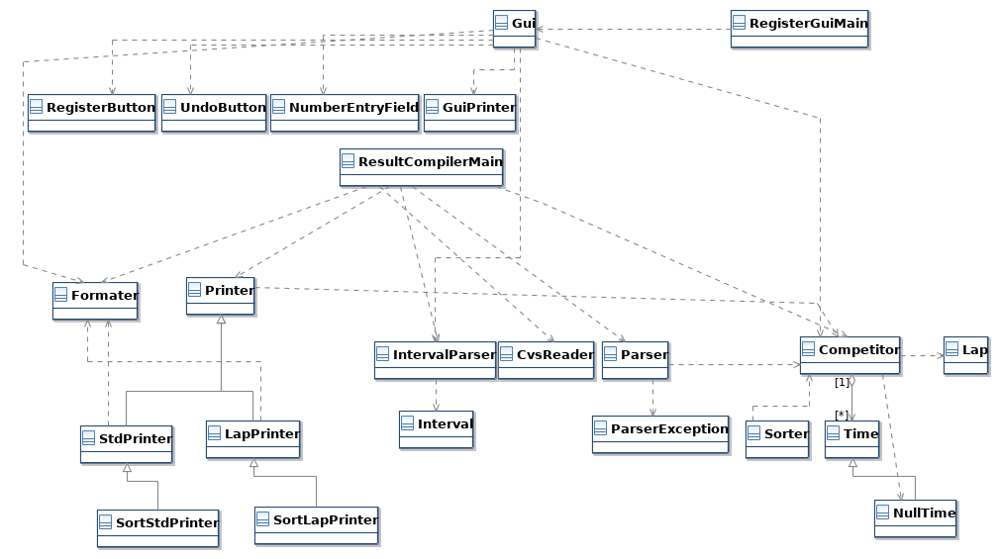

Översikt av de olika programmen
Systemet består av två olika program. Ett program för registrering av tider, samt ett program för att sortera och sammanställa resultat. Systemet byggs genom att kompilera projektet.
Registreringsprogrammet
Registreringsprogrammet skapar en fil - vilken resultatprogrammet använder sig av för att skapa resultatlistor. Programmet använder sig av ett grafiskt användargränssnitt för att registrera tider till varje startnummer som inmatas.
Resultatprogrammet
Programmet finns till för att sammanställa resultatfiler, det använder sig av en mängd olika textfiler för att kunna sammanställa följande information:
- Startnummer
- Namn
- Starttider
- Varvtider
- Etapptider
- Måltider
Programmet skriver en resultatfil, i vilken information sammanställs till en resultatlista som ser olika ut beroende på vilken tävling som körs. Nedan är ett exempel på hur det kan se ut för varvlopp med en tävlande:
StartNr; Namn; #Varv; Totaltid; Varv1; Varv2; Starttid; Varvning1; Maltid
1; Jacob Arvidsson; 2; 00.42.00; 00.22.00; 00.20.00; 12.00.00; 12.22.00; 12.42.00
I konfigurationsfilen kan man även välja att sortera listan (hur listan sorteras förklaras mer ingående längre ned). Då skrivs en till fil ut, med en sorterad lista, utöver den vanliga filen. I denna lista skrivs även placering ut. Programmet har även felhantering som skriver ut felmeddelande om det har blivit fel vid registrering. En tävlande kan tillexempel av misstag fått flera starttider, varpå "flera starttider" skrivs ut i filen. I konfigurationsfilen anger man också vilka filer som ska läsas in (namnfil, startfil, målfil), mer information om hur man gör detta hittas i användarmanualen.
Systemspecifikation
I paketet "main" finns två klasser. RegisterGuiMain.java startar
registreringsprogrammet och ResultCompilerMain.java sorteringsprogrammet.
Registreringsprogrammet
I paketen gui.register och gui.tools finns allt som
registreringsprogrammet använder sig av. De viktigaste klasserna är:
Gui.javaRegisterButton.javaUndoButton.javaNumberEntryField.javaGuiPrinter.javaGui.java är klassen som bygger upp och hanterar det grafiska
användargränssnittet. Den använder sig av RegisterButton.java och
UndoButton.java (lägger till knapparna till huvudfönstret) samt
NumberEntryField.java som ser till att endast siffor, kommatecken och
binderstreck kan skrivas in i textfältet.
GuiPrinter.java är klassen som ansvarar för utskrift till textfiler
(start och måltider) som läses in i resultatprogramet.
Resultatprogrammet
Resultatprogrammet är den lite mer avancerade delen av systemet. Programmet läser in filer,
lägger till informationen i datastrukturen och skriver sedan ut resultatfilerna.
För att läsa in informationen från filerna används paketet io.reader.
Klassen CvsReader.java har huvudansvaret för att läsa in information från
textfiler och klassen Parser.java skapar en Map < Integer, Competitor
> som mappar alla tävlande med deras startnummer.
I paketet members finnes klasser som bygger upp datastrukturen. Klassen Competitor.java har följande information om en tävlande:
- Startnummer
- Starttid(er)
- Måltid(er)
- Namn
- Klass(junior, senior osv)
- Placering
Alla tider definieras av klassen Time.java. Vid varvlopp får en tävlande flera
måltider och klassen Lap.java används då för att skapa varv innehållandes
starttid, målttid och varvtid. I members paketet finns också klassen
Sorter.java som används vid utskrift av en sorterad lista sker.
Paketet io.printer har sedan klasser som skriver ut resultat med hjälp av Mappen
som skapas i Parsern. I paketet finns 6 klasser med olika printers som alla har den gemensama superklassen Printer.java. Följande printers finns:
StdPrinter.java- Används för utskrift av tävling med endast en start och slutpunkSortStdPrinter.java- Sorterad version av StdPrinter (sorteras endast efter totaltid).LapPrinter.java- Används för utskrift av varvloppSortLapPrinter.java- Sorterad version av LapPrinter (sorteras först efter antal varv och sedan totaltid).BinaryLapPrinter.java- Används för utskrift av etapploppSortBinaryLapPrinter.java- Sorterad version av BinaryLapPrinter (sorteras först efter antal etapper och sedan totaltid).
I paketet io.printer finns också en superklass Printer.java
som alla andra printers ärver av.
I paketet io finns en klass som heter Formater.java. Denna klass ser till att
formateringen av strängarna blir korrekt. Det finns också strängar som används vid
utskrift av titeln, t.ex. Starttid, Måltid, Varvning osv.
Distribution och filformat
Vid en tävling kan det finnas flera registreringsstationer som skapar en start- och målfil. Filerna från de olika stationerna överförs sedan till en huvuddator som sammanställer alla tider till en resulatfil med hjälp av resultatprogramet.
Filformat
Starttider - Varje startfil innehåller information om startnummer och starttid i följande format:
(StartNr; Starttid)
Exempel:
2; 12.01.00
3; 12.02.00
Måltider - Varje målfil innehåller information om startnummer och måltid i följande format:
(StartNr; Måltid)
Exempel:
2; 12.22.00
3; 12.23.00
Namn - Namnfilen innehåller information om startnummer, namn och eventuellt klass i följande format:
(Klass)
(StartNr; Namn)
Exempel:
SENIOR
1; Anders Asson
2; Bengt Bsson
JUNIOR
4; David Dsson
Om inte klasser anges så innehåller listan endast startnummer och namn.
Man måste ange vilken typ av fil som läses in av parsern. Detta gör man genom att skicka in parametern FileIdentifier i parsern.
Resultat
Resultatfilen ser olika ut beroende på vilken printer som används. Kolla text nedan för exempelutskrift för varje printer.
StdPrinter:
SENIOR
StartNr; Namn; Totaltid; Starttid; Maltid
1; Anders Asson; 01.23.34; 12.00.00; 13.23.34
2; Bengt Bsson; 01.14.16; 12.01.00; 13.15.16
JUNIOR
104; David Dsson; 01.00.00; 12.05.11; 13.05.11
SortStdPrinter.java ser likadan ut förutom att listan är sorterad
efter totaltid inom varje klass. Klasserna sorteras i namnordning. Om inte klasser
anges så antas alla tävlande vara i samma klass och klasser skrivs därmed inte ut.
LapPrinter:
SENIOR
StartNr; Namn; #Varv; Totaltid; Varv1; Varv2; Varv3; Starttid; Varvning1; Varvning2; Maltid
1; David Dsson; 3; 01.12.07; 00.23.00; 00.20.00; 00.29.07; 12.00.00; 12.23.00; 12.43.00; 13.12.07
JUNIOR
StartNr; Namn; #Varv; Totaltid; Varv1; Varv2; Varv3; Starttid; Varvning1; Varvning2; Maltid
101; Anders Asson; 3; 01.23.34; 00.30.00; 00.25.00; 00.28.34; 12.00.00; 12.30.00; 12.55.00; 13.23.34
102; Bengt Bsson; 3; 00.59.16; 00.21.00; 00.20.00; 00.18.16; 12.00.00; 12.21.00; 12.41.00; 12.59.16
SortLapPrinter.java ser likadan ut förutom att listan är sorterad efter
antal varv (avtagande). Om två eller flera tävlande har samma antal varv så sorteras
dem efter totaltiden. Om inte klasser anges så antas alla tävlande vara i samma
klass och klasser skrivs därmed inte ut.
BinaryLapPrinter:
SENIOR
StartNr; Namn; Totaltid; #Etapper; Etapp1; Etapp2; Starttid1; Maltid1; Starttid2; Maltid2
1; Ander Asson; 01.11.01; 2; 01.00.00; 00.11.01; 11.00.00; 12.00.00; 12.30.00; 12.41.01
2; Claes Csson; 01.34.03; 2; 01.20.00; 00.14.03; 11.02.00; 12.22.00; 12.32.00; 12.46.03
JUNIOR
101; Bengt Bsson; 01.22.02; 2; 01.10.00; 00.12.02; 11.01.00; 12.11.00; 12.31.00; 12.43.02
SortBinaryLapPrinter.java ser likadan ut förutom att listan är sorterad
efter antal etapper och totaltid. Endast de som slutfört alla etapper får en placering.